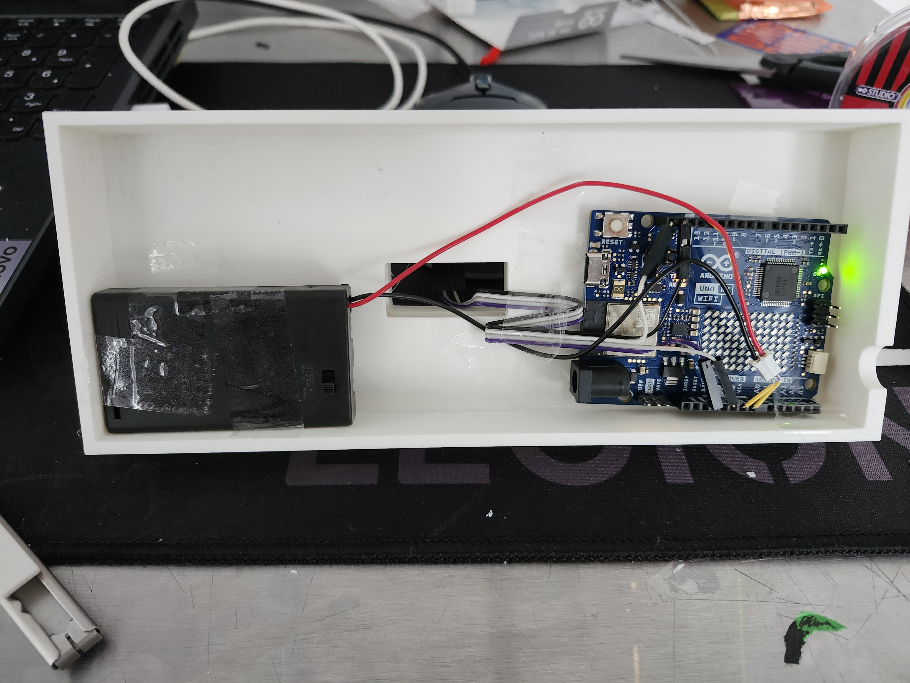

The Problem
Commuters with a set daily routine don't need a general transit app. They need one specific, fast answer: when's the next train on my usual route. I concepted a keychain fob that pulls live data straight from GO Transit's own systems and shows just that, with a way to switch between two saved destinations for a two-way commute.
Process

I moved the build through three stages, and the electronics changed shape at every one. I prototyped the circuit early in Tinkercad, low-fidelity: an Arduino Uno, a small LCD screen, a single pushbutton for switching destinations. But my first casing came out roughly 6×4×2cm, too bulky for a keychain, which forced a smaller-footprint screen and a case redesign.

Rather than build a generic enclosure, I housed the electronics inside a modified 3D-printed model of a real GO Transit F59PH locomotive, hollowed out and split into three printed sections (base, body, and lid) to route wiring and fit a 0.96" OLED display flush into the side of the shell. I upgraded the electronics to an Arduino UNO R4 WiFi paired with that OLED, pulling live data through Metrolinx's public GO Transit Open API.
Solution

I hand-painted the finished locomotive in GO Transit's green-and-white livery, down to a painted roundel logo on the nose and display base. It runs live: the OLED reads "Next Train: 10:16, OCAD," pulled directly from the API rather than a hardcoded demo value. View the Arduino code →
Outcome / Reflection
Building this taught me a lot about working with live APIs, and more broadly, how much more useful information becomes when it's immediate rather than something you have to go look up. For a predictable, everyday task like catching a train, that gap between "available somewhere" and "already in front of you" turned out to be the real design problem worth solving.